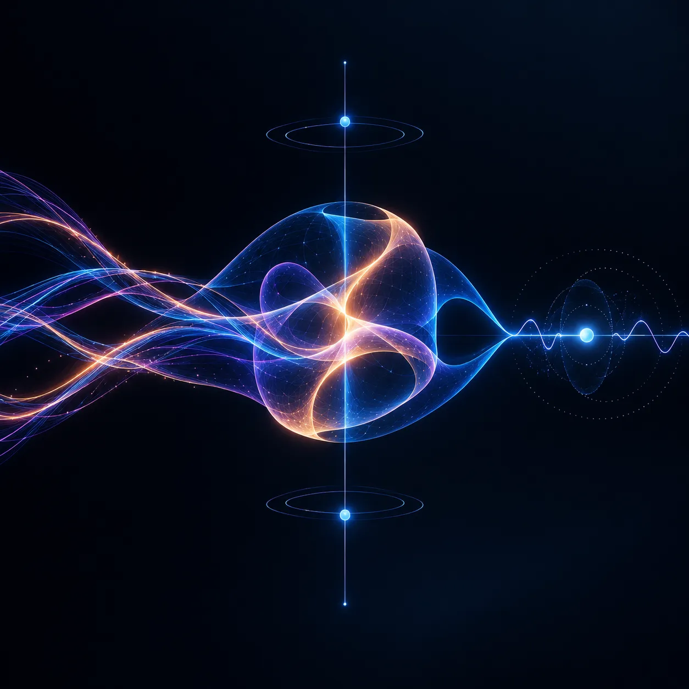

Chamss Bachiri
En reprise d'études en master de physique. Je suis passionné par la physique fondamentale, et plus particulièrement sur l'unification de la théorie quantique et de la relativité générale.
PhysiqueSciencesSimulationsProjetsPodcasts
Ce site rassemble ce que j'aime, ce que j'apprends et ce que je construis : des simulations pour rendre visibles des idées de physique, des notes sur les sujets qui m'occupent, et mes projets personnels.

Derniers ajouts
- Comment un diamant mesure-t-il le champ magnétique du cœur ?
- Les conversions d'énergie, forme par forme
- Que compte l'entropie ?
- Comment la lumière commande-t-elle un neurone ?
- Nobel de physique 2026 : l'observatoire IceCube et les neutrinos de haute énergie
- L'homme qui s'évada par principe
- Qu'est-ce que la constante de Boltzmann ?
- Qu'est-ce qu'une particule, pour la théorie quantique des champs ?
- Comment l'oreille sépare-t-elle les fréquences d'un son ?
- Pourquoi le jumeau qui voyage vieillit-il moins vite ?
- Pourquoi deux événements simultanés dans un train ne le sont pas pour le quai
- Comment un laser produit-il des photons tous identiques ?
- Pourquoi une sirène change-t-elle de note quand elle passe ?
- Comment mesure-t-on les constantes fondamentales ?
- Comment connaît-on la masse d'un électron ?
- La lumière va-t-elle plus vite si sa source avance ?
- Que se passe-t-il quand on coupe un aimant en deux ?
- L'homme qui ricochait
- La chronique de physique, le podcast